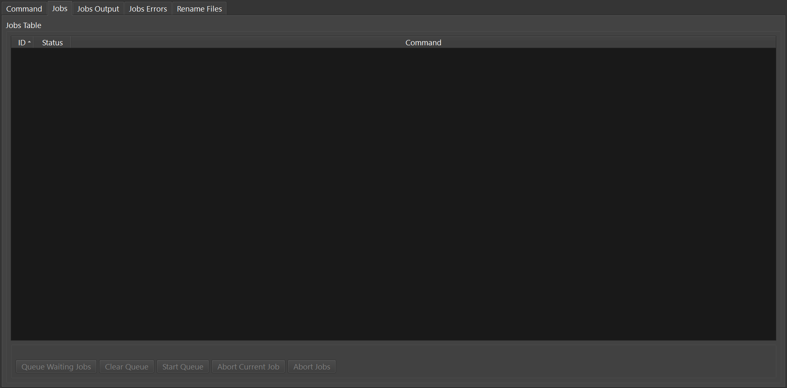

Using mkvbatchmultiplex¶
The application has a very simple interface:

mkvbatchmultiplex¶
Requirements¶
In order for mkvbatchmultiplex to work as intended there are certain conditions in the structure of the files in the source directories that need to be met. This has to be this way because we are working with group of files not one file. Also is a batch process there should not be any user input requested when working of a job. For the job to succeed the corresponding file have to be equal in the internal structure tracks have to be in the same order and same type.
Structure for directories:
The media files in the directory have to be of the same type. The program will read the directory taking information form the template so it will apply instruction to the same type of file.
The files have to be consistent that’s to say the same number of tracks, same type and order. Files found different from template will not be processed.
If more than one file are involved in the operation there have to be one of each for the resulting tracks. For example:
The instruction if for a video file and a subtitle file to be multiplexed and there are 13 video files then there have to be 13 subtitle files.
One source directory:
/source1
/Destination
video - S01E01.avi
video - S01E01.mkv
video - S01E01.srt
video - S01E02.avi
video - S01E02.mkv
video - S01E02.srt
…
…
…
…
video - S01E13.avi
video - S01E13.mkv
video - S01E13.srt
For attachments the same files will be use for every operation. If the attachments are per file the files have to be on a directory with one directory per file. If a file does not have attachments the directory still has to exists but empty.
If more than one directory is used to get the attachments then the same attachments will be use for all the files. The directory per file will not be check or used.
Files of the same type in the command have to be in different directories. To process the files names are not used to pair the sources in alphabetical position is:
Source1 AVI container source2 lang1.srt source3 lan2.srt:
Two source directory:
/directory1
/directory2
/destination
video - S01E01.avi
video - S01E01.srt
video - S01E01.mkv
video - S01E02.avi
video - S01E02.srt
video - S01E02.mkv
…
…
…
video - S01E13.avi
video - S01E13.srt
video - S01E13.mkv
This the best option for the working directories.
Functionality¶
Source File Naming¶
The source and destination directories are taken from the template. The resulting name in the directory is taken from the first media file selected for the multiplexing. The name for the subsequent files is not used what is use is the order read. The program will pair the files by order found in the directory:
/directory1
/directory2
/destination
video - S01E01.avi
sub01.srt
video - S01E01.mkv
video - S01E02.avi
sub02.srt
video - S01E02.mkv
…
…
…
video - S01E13.avi
sub03.srt
video - S01E13.mkv
If the destination directory already have a file with the destination name a prefix new- will be used. The job operation is not destructive no file will be overwritten.
Settings¶
Settings.¶
The available settings:
Interface Language:
English
Español
Enable logging. If enable logging is set the log will be saved on:
~/.mkvbatchmultiplex/mkvBatchMultiplex.log
with a rotation of 10 log files.
Enable log viewer. If enabled there will be a tab where the log can be seen as the program runs.
Font & Size. Change the font use by the interface.
Interface Language. Change the language use by the interface. English and Spanish are available.
Restore Defaults. Restore default settings.
Log viewer.¶
Tabs¶
Command
This is the main tab where the command is registered
Command tab.¶
Command Tab buttons:
Command.¶
Paste
Paste command line from system Clipboard is expected to be from a copy to clipboard from MKVToolnix.
Add Command
Add the command to the jobs table with a Waiting status
Rename
Go to the Rename tab
Add Queue
Add command to the jobs table and the work Queue. If the job worker is running the job will be processed
Start Worker
Start working on the jobs in the queue. While the jobs are being process more can be added to the queue.
The following buttons are for troubleshooting:
Analysis
Shows some information the command line parsing this can help solving problems as to why the command is not been accepted
Commands
Show commands to be executed as lists to be submitted to a subprocess
Check Files
Verify the files to be worked on and signals any command that don’t pass consistency test. Flagged commands will not be processed.
Clear Output
Clear the output of the command window
Reset
Clear contents of all output windows
When a command is entered it will be check for it to see if it is in the format the application can handle. A message Command looks ok. does not necessarily means it will work. There are other checks that are done when the job is executed. For example the number of input files does not match this will fail the entire job. This is done like this because the operation is time consuming and the GUI will seems to be frozen. When some files don’t meet criteria those files won’t be processed but the ones that match will. When the job fails use the buttons for troubleshooting to see if the problem is revealed. If still cannot find the problem post an issue to get help.
Before adding the job to the queue you have the option to push <Rename> to go to the Rename tab and rename the output files.
Jobs
Displays a table with the jobs added for current session.
Jobs.¶
Jobs Status column. The jobs can be manipulated using this column:
Waiting: the job has to be added to the queue for processing. While the job is waiting double click it can be changed to Skip, meaning don’t process the job. Or using the push button <Queue Waiting Jobs> it will add the job to the job queue.
Running: this is the current running job.
Done: job already processed.
Skip: job will not be processed. While in Skip status the job can be changed back to previous status of Waiting or Queue if the worker is active it will be processed automatically.
Aborted: the job was stopped while it was running.
Error: and error ocurred while running. A full destination disk can cause this.
Jobs tab buttons:
Jobs buttons.¶
Queue Waiting Jobs
Put all Waiting jobs on the Queue for processing
Clear Queue
Set all jobs in the Queue to a Waiting status. The Worker will not process them.
Star Worker
Start the Worker and process all jobs on the Queue.
Abort Current Jobs
Abort the current job immediately only the current file been processed will be deleted. All finished files will not.
Abort Jobs
Abort running jobs and all jobs on the Queue.
Jobs Output
Displays output messages generated by the running jobs.
mkvmerge v30.0.0 ('Interstellar') 64-bit '\video'S01E05.avi': Using the demultiplexer for the format 'AVI'. '\Video'S01E05.ass': Using the demultiplexer for the format 'SSA/ASS subtitles'. '\video'S01E05.avi' track 0: Using the output module for the format 'MPEG-4'. '\video'S01E05.avi' track 1: Using the output module for the format 'MP3'. '\Video'S01E05.ass' track 0: Using the output module for the format 'text subtitles'. The file 'C:\tests\NewFiles\new-video'S01E05 (15).mkv' has been opened for writing. Progress: 100% The cue entries (the index) are being written... Multiplexing took 0 seconds.
Jobs Errors
Display any errors found generally this means any files with inconsistent with original files track order or type don’t match.
Error Job ID: 286 --------------------- Destination File: C:\tests\NewFiles\video - S01E04.mkv Error: In structure Source: File Nme: C:\tests\VideoFiles\video - S01E04.avi File Format: -AVI- Track: 1 Order: 0 - Video Codec: None Language: None Format: MPEG-4 Visual Base Source: File Nme: C:\tests\VideoFiles\video-S01E01.avi File Format: -AVI- Track: 1 Order: 0 - Video Codec: None Language: None Format: MPEG-4 Visual Track: 2 Order: 1 - Audio Codec: None Language: None Format: MPEG Audio Number of tracks mismatched video - S01E04.avi: 1 - video-S01E01.avi: 2 Error Job ID: 286 ---------------------
Rename Files
The Rename module uses python regular expressions witch is considered to be for advance users. In order to help and make it as easy as possible regular expressions that cover a great number of the cases presented to me for downloaded series provided. Also using ‘*’ (asterisk) by itself as the regular expression a new name can be easily assigned.
For the majority of media servers a good naming scheme for the episodes of a series is:
Series Name - S01E01.mkv
The part S01E01 represents season 1 episode 1. If the files been process don’t follow this scheme the system provides the ability to rename the output files. Using regular expressions you can rename the output file names. Also if regular expressions are to difficult a new name with and index in the form:
Series Name - S01E<i: NN>
<i: NN> where NN is a number can be 0 padded. It will be substituted by a number starting with the value NN.
Rename with incremental index.¶
As shown in the figure to rename using and index set the regex to * (asterisk, and invalid regex to use). Then enter the new name with the increment mark in the desired position. Once satisfied push button Apply Rename
Example:
Rename with regex.¶
Here is an example where the name contains the series name and the episode number only.
The regular expression is::
(\\[.*\\]\\W*|)(.*?)(\\W*-|)\\W*(\\d+).*
The substitution string is::
\\2 - S01E\\4
For regular expressions the order is not important the episode number is taken from the name. Also missing episodes won’t affect the rename of the files. What the regular expression is doing is creating 4 groups::
1. (\\[.*\\]\\W*|) - this will match the group name if Analysis 2. (.*?) - this will match the series name 3. (\\W*-|) - this will match a '-' hyphen witch normally separates the name from the episode number 4. (\\d+) - this will match the episode number
In the substitution string \N represent the group number \2 for series name \4 for episode number. The other characters are literals.
The operation can be undone with the Undo pushbutton before starting the execution of the batch operation.
If it proves to difficult use the ‘*’ with Series Name S01E<i: 01> for renaming. Also I can help creating the regex by sending me the list of the original names and a template of the desired new name.
Know Issues¶
Work on documentation.